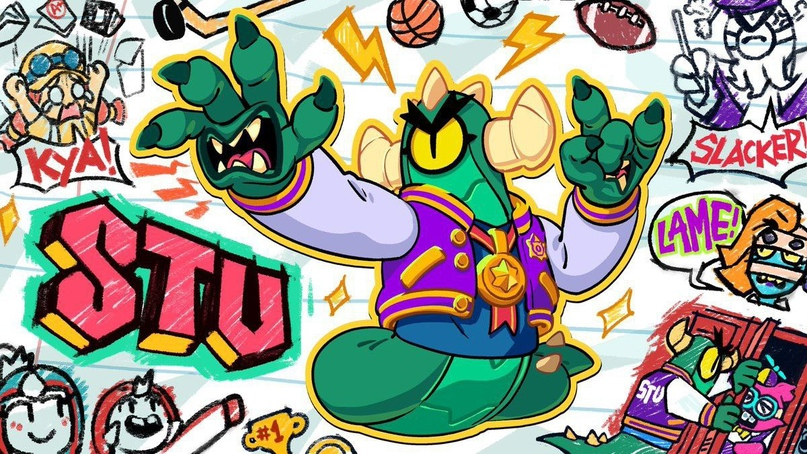
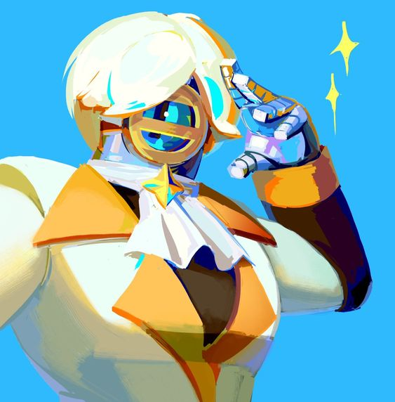

Что говорят о нем разработчики?Когда появился в игре?
"За свою карьеру каскадёра Сту пережил столько ударов и падений и так надышался бензином,что просто удивительно,как он вообще держится на колесах - такое непонятное описание дают ему разработчики игры." - данное описание присутствует в игре на данный момент. Персонаж появился в общем доступе в игре 15 марта 2021 года. Раньше его можно было получить за достижение 10000 трофеев,но в связи с изменением трофейной дороги и удалением оттуда персонажей его можно преобрести за 950 кридитов.
В игре
Без внимания сту не остался. Он состоит в двух музыкальных внутреигровых группах "Bad randoms" и "Good randoms". Так же присутствует на некоторых официальных артах. В группах выступает в качестве барабанщика.
Кратное описание голоса,внешних факторов
Бравлер Сту общается скрипучим,роботизированным голосом.Разработчики продумали для персонажа большой список фраз, главной из которых станет «Spin to win».Он имеет всего один глаз(для разработчиков данной игры это вполне нормально)и одно колесо,на котором соответсвенно передвигается. В качестве элементов одежды на нем присутсвуют шлем,некрасивый плащ,ремень(как бы это старнно не звучало) и красная куртка с элементами звездочек на ней. 

 .
.
Скины
сту имеет всего пять скинов: "Дикий сту" "серебрянный/золотой сту(креативно) "Спортсмен сту"(самый дорогой из всех имеющихся)"Суперзвезда сту", и "всаднк без головы"
Дикий сту
- скин за 79 кристаллов/2750 блингов. Относится к линейке скинов "Bad randoms". Включает в себя особую модель бойца,особый материал.
Золотой сту
скин за монеты. Его стоимость состовляет 25000. Включают в себя особую модель бойца,особый материал.

Суперзвезда сту
самый дешевый из скинов на данного персонажа. Его стоимость 29 гемов/1000 блингов. Включает в себя только особый материал.

Спортсмен сту
Его стоимость 299 кристаллов.Имеет особый материал,особую модель бойца,особые эффекты,особую анимацию,особый голос,особые эффекты при уничтожении,набор значков,иконку игрока и особый спрей.

Всадник без головы
лимитированный скин.Появляется только во время хэллуина.Его стоимость 149 геомв,но в праздник будет появляться по скидке.Имеет особую модель бойца,особые эффекты,особую анимацию,особый материал.

Серебряный сту
Скин за монеты. Его стоимость состовляет 10000 монет.Включают в себя особую модель бойца,особый материал.